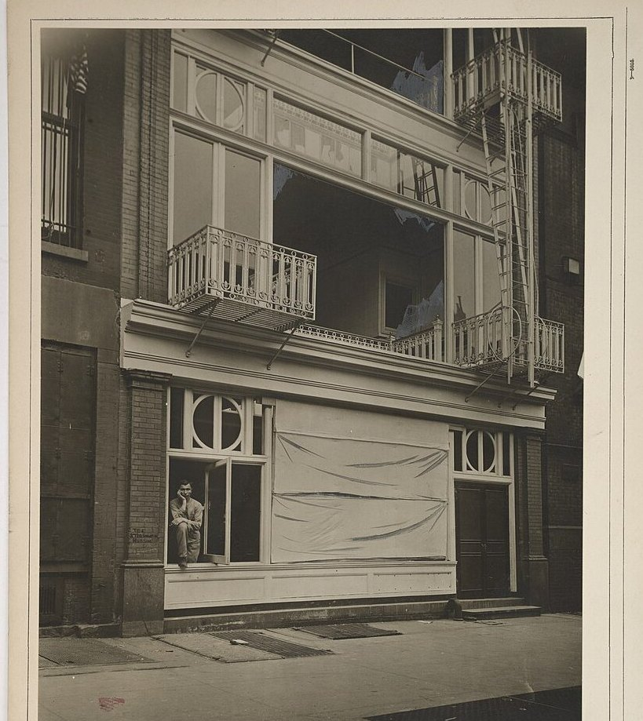

|
餐廳二樓包廂晚間爆炸 已知2人死亡 9/13  爆炸後，餐廳二樓窗戶碎裂。 9月13日晚間11時許，市區一家餐廳二樓包廂發生爆炸。截至發稿，已知2人死亡，另有多人輕重傷。傷者已送醫，其中部分傷勢較重。 警方與消防單位接獲報案後到場。初查爆炸點在二樓包廂，聲響過後玻璃碎裂，一樓營業區人員亦受波及。餐廳名稱與詳細地址，警方表示暫不公布。 現場已經封鎖。消防人員在確認沒有其他受困者後，陸續將傷者送出。死者身分仍在核對，家屬尚未全數通知。 爆炸原因還在調查。警方說，目前不能排除人為，也不能排除設備異常，確切情形要等採證結果。沒有說明這起爆炸是否與其他案件有關。 |